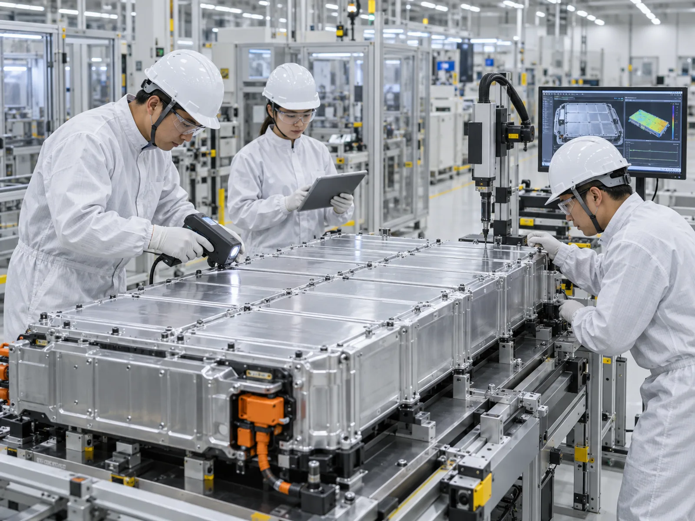

▲ 전기차 화재 현장에는 일반 화재보다 많은 물과 장비, 시간이 필요하다 ⓒ Kwangmo (Wikimedia Commons, CC0)
전기차 화재는 다른 화재와 다르다. 한 번 불이 붙으면 배터리 내부에서 연쇄적으로 열이 치솟는 '열폭주' 현상이 일어나고, 진압에 걸리는 시간과 물의 양도 내연기관차 화재보다 훨씬 많이 든다. 그래서 정부와 배터리 업계, 소방 당국이 최근 강조하는 방향은 하나로 모인다. 불이 난 다음이 아니라, 불이 나기 전에 막는 것.
2026년 9월 기준으로 정부가 확정한 전기차 배터리 화재 안전관리 대책과, 이를 뒷받침하는 배터리 업계·소방 당국의 움직임을 정리했다.
1. 왜 지금 이 대책이 나왔나
전기차 보급이 늘어나면서 배터리 화재에 대한 불안도 함께 커졌다. 지하주차장 화재처럼 사회적 파장이 큰 사고가 반복되자, 정부는 배터리 제조사와 원료 정보를 공개하는 수준을 넘어 기술적 예방책과 인프라 개선을 결합한 종합 대책을 마련했다.
이 대책의 특징은 단기 대응과 중장기 기술개발을 동시에 추진한다는 점이다. 당장 적용 가능한 스마트 제어 충전기 보급과 모니터링 체계 구축은 단기 과제로, 분리막 첨가제나 배터리팩 소화기술, 전고체배터리는 중장기 연구개발 과제로 병행된다.
제도적 뒷받침도 이미 시작됐다. 2025년 2월 17일 개정 자동차관리법 시행에 맞춰 전기차 배터리 인증제와 이력관리제가 도입됐고, 국토교통부·환경부는 신규 배터리 제작사에 대해 안전성을 정부가 직접 시험·인증하는 체계를 가동 중이다. 이는 이번 화재 안전관리 대책이 기술개발·인프라 교체에 그치지 않고, 배터리 안전성 검증 자체를 제도화했다는 의미다.
📍 전기차 화재가 유독 까다로운 이유
리튬이온 배터리에 내부단락이 생기면 셀 하나의 온도가 급격히 오르고, 그 열이 옆 셀로 옮겨붙는 열폭주(thermal runaway)가 발생한다. 한 번 열폭주가 시작되면 일반 소화약제로는 완전히 끄기 어렵고, 꺼진 것처럼 보여도 몇 시간 뒤 재발화하는 경우도 있어 대량의 냉각수와 장시간 감시가 필요하다.
2. 화재 원인과 기술적 대응 — 분리막·소화기술·전고체배터리
정부는 중장기적으로 배터리 내부단락으로 인한 화재위험을 낮추기 위해 세 갈래 기술개발을 추진한다.
| 기술 분야 | 내용 |
|---|---|
| 분리막 안정성 향상 첨가제 | 양극과 음극 사이 분리막이 손상돼 내부단락이 생기는 것을 막는 첨가제 개발 |
| 배터리팩 소화기술 | 배터리팩 내부에서 초기 발화를 억제하거나 확산을 막는 소화 기술 개발 |
| 전고체배터리 | 액체 전해질 대신 고체 전해질을 사용해 누액·발화 위험 자체를 낮추는 차세대 배터리 기술개발 지속 |
| BMS 고도화 | 내년부터 BMS(배터리관리시스템) 센서 다변화, 알고리즘 정확도 향상, 화재 전 가스배출 감지·냉각기술 개발로 화재진단·제어 성능 고도화 |

▲ 전기차 화재는 열폭주 특성상 소화 담요 등 별도 진압 장비와 훈련이 필요하다 ⓒ Anja Engel (Wikimedia Commons, CC BY-SA 4.0)
✅ BMS(배터리관리시스템)가 하는 일
· 배터리 셀의 전압·전류·온도를 실시간으로 감시
· 이상 징후(과전압·과전류·이상 발열) 발생 시 충전을 차단하거나 경고를 보냄
· 향후에는 화재 전 단계의 가스 배출을 감지해 조기경보로 연결하는 기능까지 고도화될 예정
정부는 여기서 한 걸음 더 나아가 BMS가 감지한 배터리 위험도를 3단계 표준으로 구분하는 방안도 추진하고 있다. 1단계(주의)는 정비 필요, 2단계(경고)는 제작사의 긴급출동, 3단계(위험)는 소방당국 출동으로 이어지는 체계다. 차주가 정보제공에 동의한 차량을 대상으로, 위험 단계로 판단되면 사람이 신고하기 전에 자동으로 소방당국에 통보하는 시범사업이 추진되고 있어, BMS가 단순 경고 장치를 넘어 화재 대응의 '첫 신고자' 역할까지 맡게 될 전망이다.
3. 충전 인프라 안전 강화 — 스마트 제어 충전기로 순차 교체
화재 예방의 또 다른 축은 충전기 자체를 똑똑하게 만드는 것이다. 완속충전기에 전력선통신(PLC) 모뎀을 탑재한 스마트 제어 충전기는 충전 중인 전기차의 전류·전압·온도 등 배터리 정보를 분석해 과충전을 방지한다. BMS와 함께 이중 안전장치 역할을 하는 셈이다.
| 연도 | 교체 대수 |
|---|---|
| 2025년 | 2만 기 |
| 2026년 | 3.2만 기 |
| 2027년 이후 | 27.9만 기 |

▲ 완속충전기는 이용 빈도가 높은 만큼 스마트 제어 기능 탑재가 핵심 안전 대책으로 꼽힌다 ⓒ Wikimedia Commons (CC0)
전기차 충전소 관련 스마트제어 완속충전기 보급 정보는 무공해차 통합누리집에서 확인할 수 있다. 스마트제어 완속충전기 정보 바로가기
실제 설치 작업도 속도를 내고 있다. 환경부에 따르면 2024년 시작된 스마트 제어 충전기 구축 사업은 총 32개 사업, 4만 2,032기 규모로 진행 중이며, 실제 차량으로 충전제어 기능(SOC 표시, 목표충전량 설정, 완충 시 자동 종료 등)을 확인하는 준공 점검이 순차적으로 이뤄지고 있다. 전기차 제작사·수입사들도 2026년 1월 1일까지 차량 통신 소프트웨어 업데이트를 통해 배터리 정보를 제공하기로 합의해, 스마트 제어 충전기가 실제 배터리 데이터를 받아 작동할 수 있는 여건이 갖춰지고 있다.
📍 한국전기안전공사, 전국 ESS 통합 모니터링 체계 구축
충전기뿐 아니라 에너지저장장치(ESS)도 화재 위험 관리 대상이다. 한국전기안전공사는 전국 단위로 ESS 상태를 실시간 파악할 수 있는 통합 모니터링 체계 구축을 추진하고 있다. 개별 사업장이 자체적으로 점검하던 방식에서 벗어나, 이상 징후를 광역 단위에서 조기에 포착하겠다는 취지다.
이 체계는 이미 실질적인 성과로 이어지고 있다. 전기안전공사가 운영하는 AI 기반 디지털 안전관리 플랫폼에는 법정검사 대상 ESS의 약 96%가 연결돼 있으며, AI 분석을 통한 사전 예방조치가 매달 수십 건씩 이뤄지고 있다. 배터리 교체, 공조시설 수리, 전력변환장치(PCS) 이상에 따른 장비 교체 등이 대표적인 조치 사례다.
4. 배터리업계 대응 — LG에너지솔루션과 삼성SDI
배터리 제조사들도 자체적인 안전 강화에 나섰다. LG에너지솔루션은 2026년 1월 7일 한국전기안전공사와 'ESS 안전 고도화 및 안정 LFP 배터리 안전관리체계 구축' 업무협약(MOU)을 체결했다. ESS용 LFP(리튬·인산·철) 배터리는 그동안 별도의 안전기준이 없어 사각지대로 지적돼 왔는데, 양사는 이를 계기로 안전관리 정책 지원, 정보 공유, 전문인력 양성 등에서 협력해 안전하고 신뢰할 수 있는 LFP형 ESS 공급 기반을 마련하기로 했다. 앞서 LG에너지솔루션은 2019년 ESS 화재 이슈 당시 특정 생산 시기 배터리를 자발적으로 전량 교체한 전례가 있어, 이번 협약도 그 연장선의 예방적 대응으로 볼 수 있다.
삼성SDI는 화재 확산을 억제하는 특수 소화 시스템을 도입했다. 배터리 셀 하나에서 문제가 생기더라도 인접 셀로 열이 전이되는 것을 늦추거나 막아, 초기 대응 시간을 벌어주는 방식이다. 과거 ESS 화재 이슈 당시 일부 배터리 제조사가 특정 생산 시기 제품을 자발적으로 전량 교체하고 특수 소화시스템을 순차 적용했던 사례가, 이번 대책에서 업계 전반의 표준 대응으로 확대되는 흐름이다.

▲ 배터리 제조사들은 완성 전 단계에서부터 셀·팩 단위 정밀검사를 강화하고 있다 ⓒ CarPrism (AI 생성 이미지)
✅ 배터리 업계 안전 대응 요약
· LG에너지솔루션 — 배터리 안전관리 강화, 한국전기안전공사와 ESS용 LFP 배터리 안전관리체계 공동 구축
· 삼성SDI — 화재 확산 방지를 위한 특수 소화 시스템 도입
· 공통 방향 — 사고 발생 후 대응이 아니라 제조·운용 단계부터 위험을 줄이는 예방적 접근으로 이동
5. 소방 당국의 제언 — "진압보다 예방·조기감지"
8월 31일, 한국소방안전원 정책연구소는 서울 한국프레스센터에서 열린 '전기자동차(리튬이온배터리) 화재 예방과 대응기술 현재와 미래' 포럼에 참여해 개선 방향을 제시했다. 이 포럼에서는 전기차 화재 진압기술, 리튬계 배터리 화재안전 시험·평가, 배터리 열폭주 및 소화약제, 충전구역 안전관리, 화재 확산 방지기술 등이 폭넓게 논의됐다.
📍 "사후진압이 아니라 예방·조기감지·신속대응·피해저감"
포럼에서 '전기차 충전구역 화재안전관리의 현재와 미래'를 발표한 김태균 한국소방안전원 정책연구소 선임연구원은, 화재 발생 이후 진압에 집중하기보다 예방(Prevention)·조기감지(Early Detection)·신속대응(Rapid Response)·피해저감(Damage Mitigation)까지 이어지는 종합적인 안전관리체계가 필요하다고 강조했다. 충전구역별 특성을 반영한 맞춤형 기준 마련과 관계기관 간 협력 강화도 함께 제안됐다. 이는 정부가 추진하는 스마트 제어 충전기·ESS 통합 모니터링 정책의 방향성과도 일치한다.
한국소방안전원의 전기차 화재안전 포럼 관련 소식은 아래에서 확인할 수 있다. 한국소방안전원 포럼 기사 바로가기
6. 운전자가 알아야 할 실질적 팁
정부와 업계의 대책은 결국 시간이 걸리는 인프라·기술 개선이다. 그 사이 개별 운전자가 지금 당장 챙길 수 있는 예방 수칙도 함께 정리했다.
⚠️ 전기차 충전·보관 시 화재 예방 체크리스트
· 완속충전기 우선 이용 — 스마트 제어 충전기로 순차 교체 중이므로, 가능하면 최신 안전기능이 탑재된 충전기를 확인하고 이용
· 100% 완충보다는 80~90% 수준 충전 습관화 — 장기간 만충 상태 방치는 셀 스트레스를 높일 수 있음
· 충전 중 이상한 냄새, 충전 케이블 발열, 배터리 경고등이 뜨면 즉시 충전을 중단하고 제조사·서비스센터에 문의
· 지하주차장 장기 주차 시 가능하면 화재 감지·소화 설비가 갖춰진 구역을 우선 이용
· 차량 침수·심한 충격 이후에는 눈에 보이는 손상이 없어도 배터리 셀 손상 가능성이 있으므로 반드시 전문 점검을 받을 것
7. 요약
정부는 전기차 배터리 화재위험을 낮추기 위해 분리막 안정성 향상 첨가제, 배터리팩 소화기술, 전고체배터리 등 중장기 기술개발을 추진하는 한편, 완속충전기를 스마트 제어 충전기로 2025년 2만기, 2026년 3.2만기, 2027년 이후 27.9만기 순차 교체하기로 했다. 한국전기안전공사는 전국 ESS 통합 모니터링 체계를 구축하고 있다.
배터리 업계도 자체 대응에 나섰다. LG에너지솔루션은 한국전기안전공사와 ESS용 LFP 배터리 안전관리체계를 공동 구축하고, 삼성SDI는 화재 확산을 억제하는 특수 소화 시스템을 도입했다.
한국소방안전원은 8월 31일 포럼에서 전기차 충전구역 화재안전관리를 사후진압 중심에서 예방·조기감지 중심으로 전환해야 한다고 제언했다. 정부·업계·소방 당국의 방향이 '불이 난 뒤 끄는 것'에서 '불이 나기 전에 막는 것'으로 함께 이동하고 있는 셈이다.